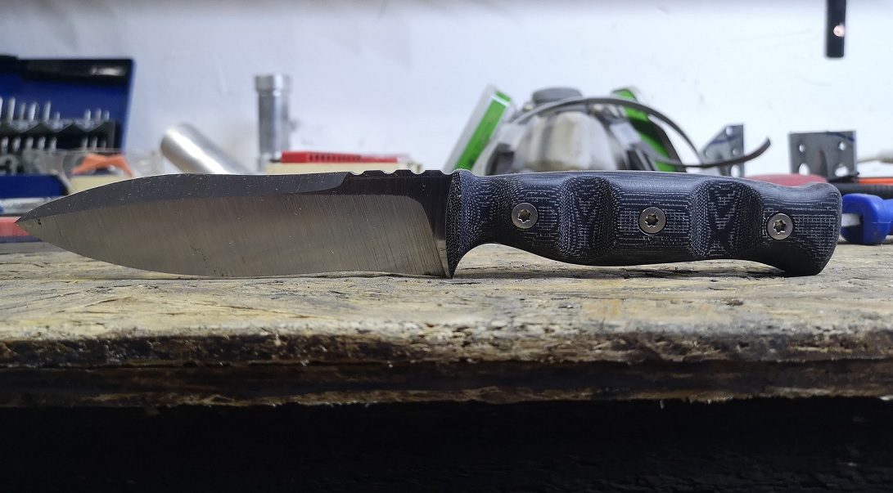
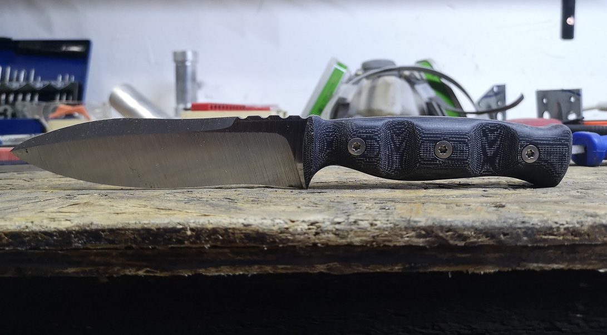

Bemutatkozás:
Ez a Cybertek weboldal, ahol a saját kézzel készített egyedi késeimet osztom meg a jónéppel. Jelenleg hagyományos késeket készítek, a jövőben ujjlenyomatfelismerő rendszer segítségével nyitható késeket fogok készíteni.
Ez a Cybertek weboldal, ahol a saját kézzel készített egyedi késeimet osztom meg a jónéppel. Jelenleg hagyományos késeket készítek, a jövőben ujjlenyomatfelismerő rendszer segítségével nyitható késeket fogok készíteni.
 
